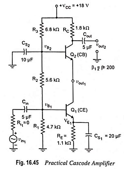
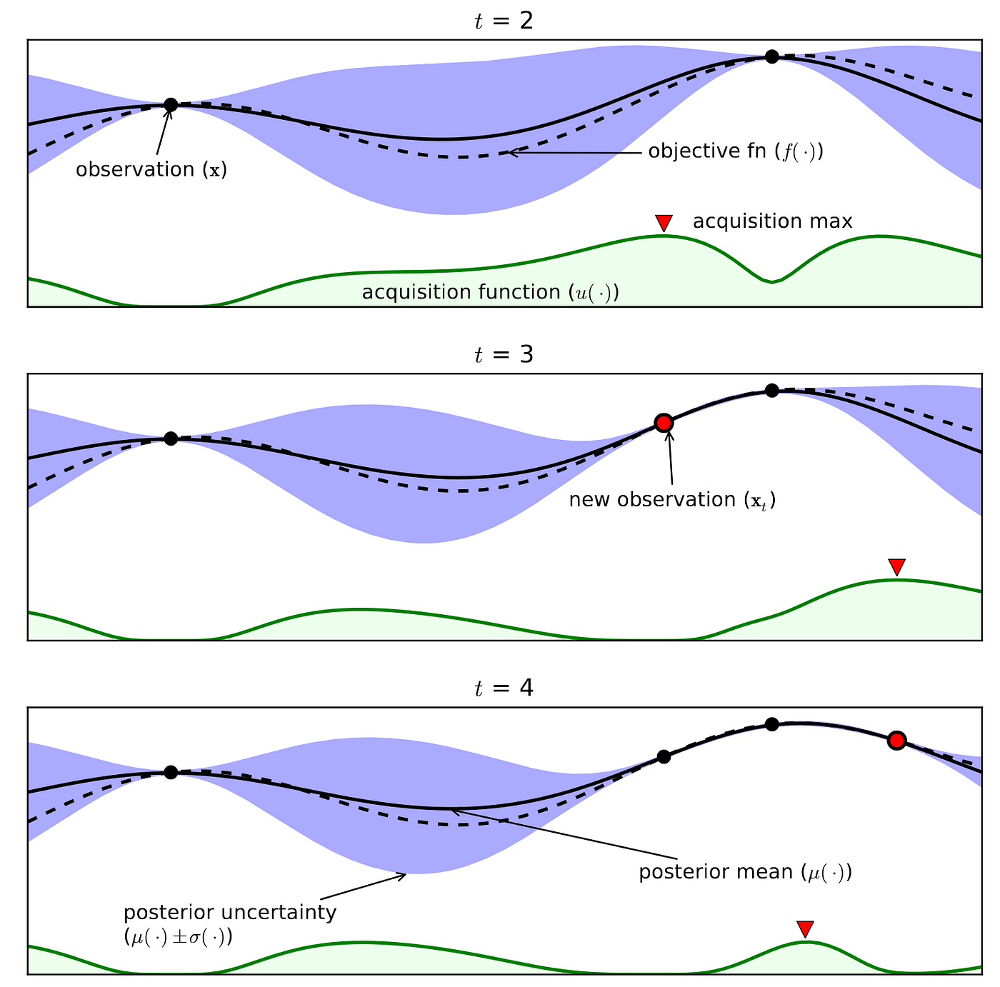
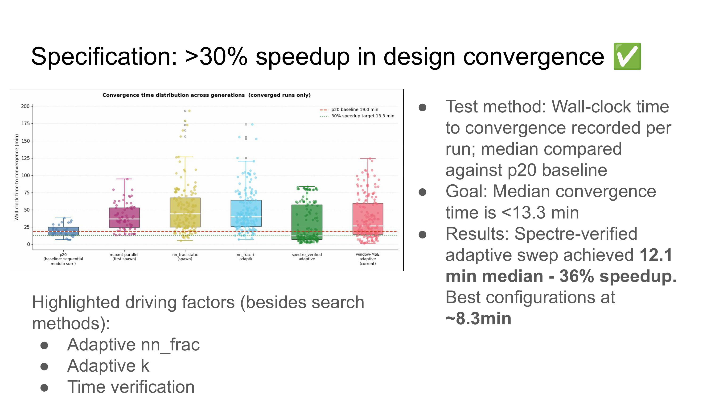
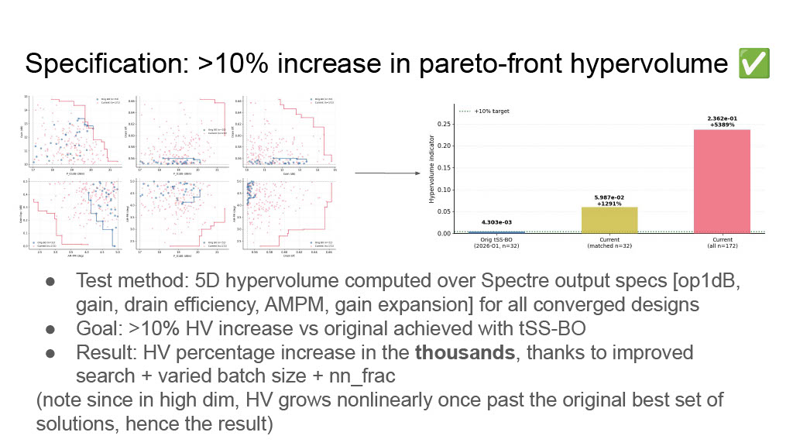

Matthew Karazincir
Electrical Engineer
Digital, RF, ML Design Automation
Digital, RF, ML Design Automation
Hi, I'm Matthew! My interests mainly lie in (RF + Digital) IC Design,
ML for circuit design, and wireless communications. I'm continuing to learn and build in
these areas, and others as well such as power electronics. Here
you can find out more about my projects, research, and professional
experience.
I graduated from Rice University in May 2026 and am pursuing my MS in Electrical Engineering at Stanford, including research in the ACME Lab.
I graduated from Rice University in May 2026 and am pursuing my MS in Electrical Engineering at Stanford, including research in the ACME Lab.

FOCUS AREAS
What I work on
I'm interested in high-frequency IC design, my research and studies siding towards RF + Analog IC design, additionally extending this to full implementations on PCBs. I'm also interested in wireless communications, both network protocols and PHY.
01
Digital IC Design
02
RF / Analog IC Design
03
ML for EDA / Design Automation
04
PCB Design
05
Wireless Protocols (incl. PHY layer)
DESIGN AUTOMATION
Cascode Power Amplifier Design Automation
Optimizing Power Amplifiers at the layout level, here cascode power amplifiers, becomes highly complex,
as we rely on EM wave solvers, which solve unintuitive partial differential equations.
These solutions let us then find performance metrics like the amplifier's gain, AMPM,
1dB operating point, PAE, etc.
A circuit-level Cascode PA example is shown below.
We have multiple design variables of a Cascode PA, such as cascode bias voltage, quiescent bias current, transistor sizing, etc. These are simultaneously changed against our multiple performance metrics, each having a goal threshold, until we obtain our best "pareto-front", i.e. an array of best input design variable sets which result giving us the set of best possible performance metrics.
A circuit-level Cascode PA example is shown below.

We have multiple design variables of a Cascode PA, such as cascode bias voltage, quiescent bias current, transistor sizing, etc. These are simultaneously changed against our multiple performance metrics, each having a goal threshold, until we obtain our best "pareto-front", i.e. an array of best input design variable sets which result giving us the set of best possible performance metrics.
Originally, we used Bayesian Optimization (BO) for modeling the power amplifier's performance function, which is a black box.
This is built on a Gaussian Process (GP), which essentially gives back a different gaussian distribution for a
continuous input set - for any infinitisemally small difference in input variable set, we have a different
gaussian distribution for the output performance. The optimization aspect applied to GP balances searching in areas
where the distribution is wide (because of a lack of samples) and where new samples continue yield better
loss function score (i.e. exploitation vs. optimization.) See a simple example of BO below.
Training these GPs with high-dim inputs is troublesome, as its complexity is O(N3), N the input dimnesionality. I applied an advanced technique called truncated subspace Bayesian Optimization (tSS-BO) which limits the search to "subspaces" in the input design space that it discovers as the optimization progresses, i.e. choosing a fraction of N variables that currently show the best performance improvement. The "truncated" aspect of the optimization takes is its use of truncated probability distributions for this subspace to only have positive values within the current "subarea" the optimization is focused on to ensure the search is well-focused. You can read more about the technique here.
The other main bottleneck is simply how long it takes for EM simulators (our black box function) to give back its value for an input, so through literature review I found Bayesian Neural Networks (BNNs) to be an emerging EM simulator surrogate model. These networks have their weights and biases represented by distributions rather than set values, and are both robust against noisy samples and overfitting. I implemented a computationally cheap approximation of a BNN by fitting an MLP with dropout layers, to simulate "sampling" weights and biases. For each search area (step) in the optimization, a fraction of the sampled points are run through the surrogate, the rest through the EM simulator, for stability.
Finally, there was the question of how much we can trust, and ideally leverage, the surrogate model's guesses. I developed an adaptive scheme for updating what fraction of sampled points were run on the surrogate BNN at each step in the optimization by giving it the criteria: if surrogate model's new calculated loss at the current step does not has not improved by a certain threshold X in the past Y, decrease the fraction of runs on the surrogate BNN. Conversely, increase the fraction. This was implemented to prevent the optimization from hallucinating good steps in the search area from improper surrogate model inference.

Training these GPs with high-dim inputs is troublesome, as its complexity is O(N3), N the input dimnesionality. I applied an advanced technique called truncated subspace Bayesian Optimization (tSS-BO) which limits the search to "subspaces" in the input design space that it discovers as the optimization progresses, i.e. choosing a fraction of N variables that currently show the best performance improvement. The "truncated" aspect of the optimization takes is its use of truncated probability distributions for this subspace to only have positive values within the current "subarea" the optimization is focused on to ensure the search is well-focused. You can read more about the technique here.
The other main bottleneck is simply how long it takes for EM simulators (our black box function) to give back its value for an input, so through literature review I found Bayesian Neural Networks (BNNs) to be an emerging EM simulator surrogate model. These networks have their weights and biases represented by distributions rather than set values, and are both robust against noisy samples and overfitting. I implemented a computationally cheap approximation of a BNN by fitting an MLP with dropout layers, to simulate "sampling" weights and biases. For each search area (step) in the optimization, a fraction of the sampled points are run through the surrogate, the rest through the EM simulator, for stability.
Finally, there was the question of how much we can trust, and ideally leverage, the surrogate model's guesses. I developed an adaptive scheme for updating what fraction of sampled points were run on the surrogate BNN at each step in the optimization by giving it the criteria: if surrogate model's new calculated loss at the current step does not has not improved by a certain threshold X in the past Y, decrease the fraction of runs on the surrogate BNN. Conversely, increase the fraction. This was implemented to prevent the optimization from hallucinating good steps in the search area from improper surrogate model inference.
See the figures below from research presentations. My methods helped achieve a 36% speedup
in design convergence with convergence rate > 90%, and a 5D hypervolume increase in the thousands of percent.
A thought going forward would be to represent hypervolume increases in dB since we are dealing with 5
(or many more) dimensions.


This was my senior design project at Rice; see the poster presentation below to see how it integrated.
STATUS
As of 8/26/2026, this website is actively being built. Check back soon!
More projects, research detail, and a downloadable CV are on the way. In the meantime, the PA automation project above is fully written up, and you can always reach me directly below.
CONTACT